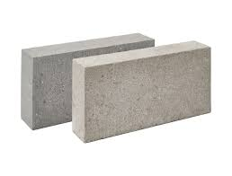
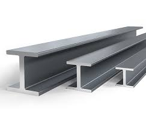
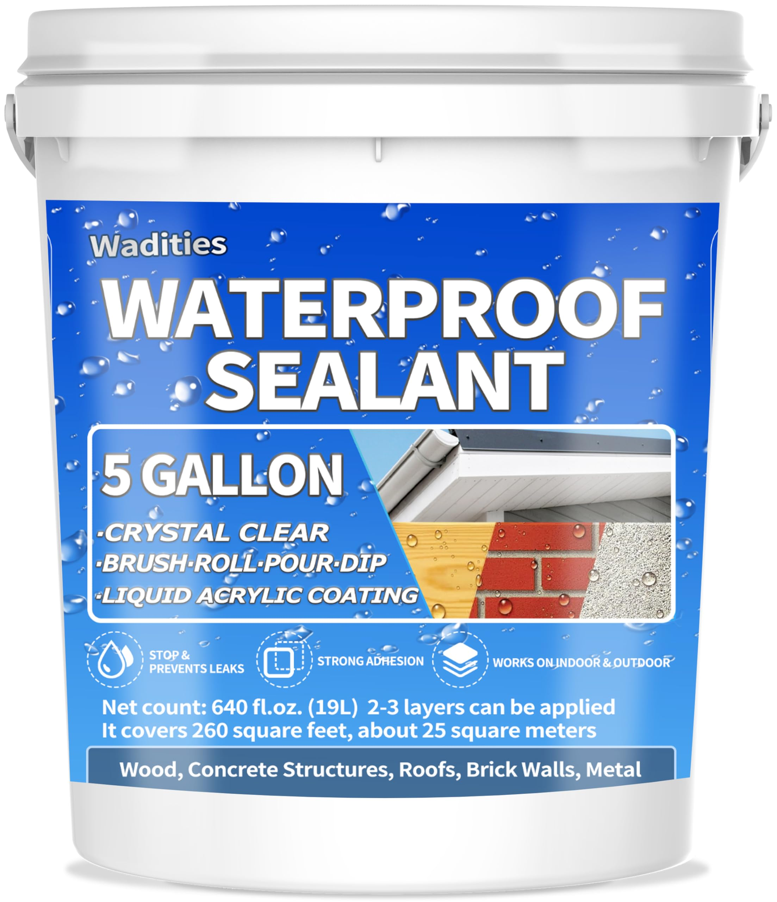

Tekton Products
Our Products:
At Tekton, we provide innovative, sustainable construction products that are trusted across the country. Below is an overview of some of our best offerings.
Featured Products
- Tekblock – Sustainable concrete blocks made with recycled materials.

- TekSteelFrame – Lightweight but durable steel beams used in modern buildings.

- TekSeal – best seller Water-resistant sealant ideal for rooftops and basements.

Product Development Timeline
- 2016 – Tekblock launched as first recycled concrete product, soon became popular all over the world.
- 2019 – TekSteelFrame introduced.
- 2022 – TekSeal added to our waterproofing lineup.
Learn more about our materials from complete industry supplier.
Contact product team
Product Catalog
Page last updated on: